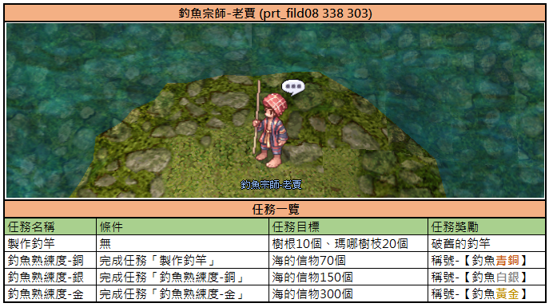
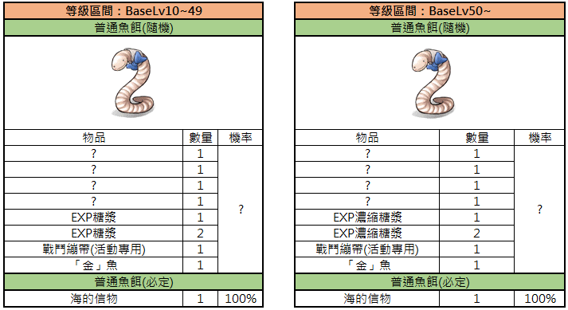
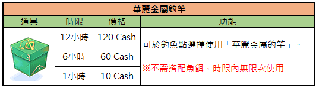
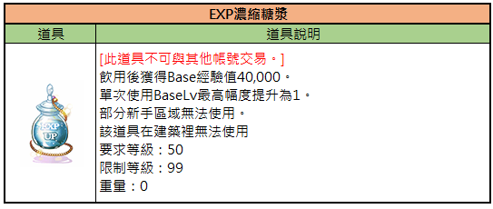

Angel-System (釣魚系統)
Leveln durch Angeln? Auf TWRoZ ja — dank „Erfahrungs-Sirup" und seltenem „Goldfisch" ist Fishing eine legitime AFK-XP-Methode und Titel-Jagd.
🎣 Einstieg: Die kaputte Angelrute (破舊的釣竿)
NPC: Angel-Meister Alter Jia (釣魚宗師-老賈)
Position: /navi prt_fild08 338/303
- Sprich mit dem Angel-Meister — er gibt dir die Angelrute-Bastel-Quest
- Nach Abschluss der Quest erhältst du täglich 10× Standard-Köder (普通魚餌)
Anzahl kann durch Angel-Titel erhöht werden - Sammle bestimmte Mengen an „Meereszeichen" (海的信物) → schalte entsprechende Titel frei
- Bringe 4× „Goldfisch" (金魚) → erhalte den seltenen Titel „Herr des Meeres" (大海的主人)

📋 Aufgabenübersicht von Angelmeister Old Jiao — Deutsch aufklappen
Das Bild zeigt den NPC Angelmeister Old Jiao in prt_fild08 und listet seine verfügbaren Angel-Quests auf.
| Aufgabenname | Bedingungen | Aufgabenziel | Belohnung |
|---|---|---|---|
| Make Fishing Rod | None | Tree Root 10, Manananggal Branch 20 | Old Fishing Rod |
| Fishing Mastery - Bronze | Complete Quest 'Make Fishing Rod' | Sea Creature 70 | Title - [Fishing Bronze] |
| Fishing Mastery - Silver | Complete Quest 'Fishing Mastery - Bronze' | Sea Creature 150 | Title - [Fishing Silver] |
| Fishing Mastery - Gold | Complete Quest 'Fishing Mastery - Gold' | Sea Creature 300 | Title - [Fishing Gold] |
Der NPC heißt 'Fishing Master Old Jiao' (prt_fild08 338 303). Die Liste zeigt die Anforderungen für Angel-Quests und die entsprechenden Titel-Belohnungen.
📍 Angel-Gewässer
Die Prontera-Abenteurer-Gilde erkundet kontinuierlich neue Gewässer. Mit jedem Patch werden weitere Spots freigeschaltet.
🎁 Reward-Übersicht (Standard-Rute)

📋 Belohnungen für BaseLv 10-49 — Deutsch aufklappen
Diese Tabelle zeigt die zufälligen und garantierten Belohnungen für 'Ordinary Fish Bait' basierend auf dem Charakter-Levelbereich 10-49.
| Gegenstand | Menge | Chance |
|---|---|---|
| ? | 1 | ? |
| ? | 1 | ? |
| ? | 1 | ? |
| ? | 1 | ? |
| EXP Potion | 1 | ? |
| EXP Potion | 2 | ? |
| Battle Manual (Event) | 1 | ? |
| 'Golden' Fish | 1 | ? |
| Sea Token | 1 | 100% |
Die Kategorie 'Ordinary Fish Bait' ist unterteilt in zufällige Ergebnisse und einen garantierten Gegenstand (Sea Token).
✨ Stufe 2: Prächtige Metall-Angelrute (華麗金屬釣竿)
Ein deutliches Upgrade mit besseren Rewards — vor allem die XP-Sirup-Belohnung macht diese Rute zum Leveling-Tool.

📋 Fancy Metal Fishing Rod — Deutsch aufklappen
Tabelle mit Preisen und Nutzungsdauer für die 'Fancy Metal Fishing Rod' im Spiel.
| Gegenstand | Dauer | Preis | Funktion |
|---|---|---|---|
| Fancy Metal Fishing Rod | 12 Stunden | 120 Cash | Kann an Angelplätzen ausgewählt werden, um die 'Fancy Metal Fishing Rod' zu benutzen. |
| Fancy Metal Fishing Rod | 6 Stunden | 60 Cash | ※ Kein Köder erforderlich, unbegrenzte Nutzung innerhalb der Zeitdauer. |
| Fancy Metal Fishing Rod | 1 Stunde | 10 Cash |
Die Tabelle listet verschiedene Laufzeiten für die 'Fancy Metal Fishing Rod' und deren Kosten auf. Es ist kein zusätzlicher Köder nötig und die Nutzung ist während der Laufzeit unbegrenzt.

📋 EXP Konzentrat — Deutsch aufklappen
Dies ist eine Tabelle mit Informationen zu einem Verbrauchsgegenstand namens EXP Konzentrat in Ragnarok Zero.
| Gegenstand | Gegenstandsbeschreibung |
|---|---|
| EXP Konzentrat | [Dieser Gegenstand kann nicht mit anderen Konten gehandelt werden.] Gewährt nach dem Trinken 40.000 Base EXP. Maximale Steigerung des BaseLv bei einmaliger Verwendung: 1. Kann in einigen Anfängerbereichen nicht verwendet werden. Dieser Gegenstand kann nicht innerhalb von Gebäuden verwendet werden. Erforderliches Level: 50 Maximales Level: 99 Gewicht: 0 |
🍯 XP-Sirup & Job-Sirup (Patch 10.02.2026)

📋 Belohnungen der Luxuriösen Angelrute — Deutsch aufklappen
Vergleich der Belohnungen beim Angeln mit der Luxuriösen Angelrute basierend auf dem Base-Level-Bereich.
| Gegenstand | Menge | Wahrscheinlichkeit |
|---|---|---|
| (EXP Syrup 1~3 garantiert) | ||
| EXP Syrup | 1 | 92% |
| EXP Syrup | 2 | 7% |
| EXP Syrup | 3 | 1% |
| (JOB Syrup 1~3 garantiert) | ||
| JOB Syrup | 1 | 92% |
| JOB Syrup | 2 | 7% |
| JOB Syrup | 3 | 1% |
| (Concentrated EXP Syrup 1~3 garantiert) | ||
| Concentrated EXP Syrup | 1 | 92% |
| Concentrated EXP Syrup | 2 | 7% |
| Concentrated EXP Syrup | 3 | 1% |
| (Concentrated JOB Syrup 1~3 garantiert) | ||
| Concentrated JOB Syrup | 1 | 92% |
| Concentrated JOB Syrup | 2 | 7% |
| Concentrated JOB Syrup | 3 | 1% |
Die Tabelle zeigt zwei Kategorien: Luxuriöse Angelrute für BaseLv 10-49 (EXP/JOB Syrup) und für BaseLv 50+ (Concentrated EXP/JOB Syrup).
💡 Strategie-Tipps
- Daily-Run: Hol deine 10 Standard-Köder jeden Tag — das ist kostenlos und garantiert
- Titel-Jagd: Meereszeichen sammeln → Angel-Titel freischalten → mehr tägliche Köder
- Metall-Rute lohnt: Der Upgrade-Aufwand zahlt sich durch XP/Job-Sirupe aus, besonders für Trans-Level-Grind
- Der Goldfisch: Selten, aber 4 davon = „Herr des Meeres" (Prestige-Titel)
- Kombinier mit Fever-Boost: Siehe Fever-Felder für aktive XP-Sessions zwischen Angel-Trips